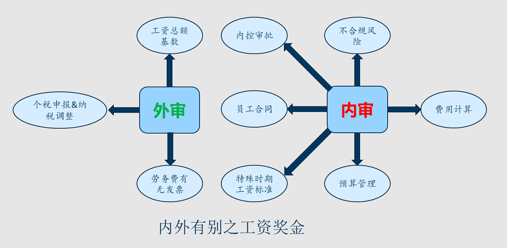
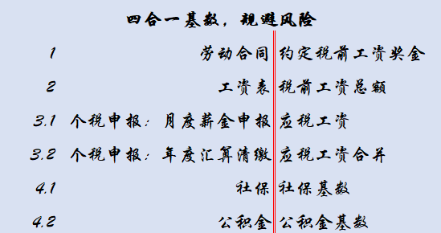
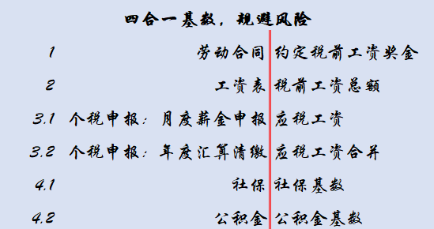

案例分享 > 案例详情
审外审之工资奖金
内审外审关注视角
比如人工成本，具体到工资、劳务费、社保公积金、奖金提成以及个税申报，内审外审关注视角分别是这样子的：
外审关注：A.工资总额基数；B.劳务费有无发票；C.个税申报与纳税调整。
内审关注：a.员工合同；b.不合规风险；c.费用计算；d.预算管理；e.内控审批；f.特殊时期工资标准。
外审关注：A.工资总额基数；B.劳务费有无发票；C.个税申报与纳税调整。
内审关注：a.员工合同；b.不合规风险；c.费用计算；d.预算管理；e.内控审批；f.特殊时期工资标准。

a.员工合同
和员工签订的是劳动合同还是劳务合同？有什么区别？
和一个员工可以签几家劳动合同吗？可以。有用，看你会不会用了！
劳动合同、劳务合同和个税申报是否一致？
和一个员工可以签几家劳动合同吗？可以。有用，看你会不会用了！
劳动合同、劳务合同和个税申报是否一致？
b.不合规风险
企业为了配合员工少交个税，允许员工用发票报销冲抵工资奖金，这对企业有什么风险？
企业有多少“发票工资”、“现金工资”？
现金工资对个人有风险吗？企业变卦了怎么办？
企业能想到的办法，税务和审计都门儿清，怎么办？
专家、保洁等劳务费是否代开了劳务费发票？是否代扣代缴了个税和增值税？
农民工工资是彼之工资，我之劳务，要代扣代缴个税，代理申报吗？
社保基数没有按照工资据实，被社保稽查、被员工投诉的风险有多少？追偿补救成本有多大？
如果要合规，成本增加多少？有没有合法可行的筹划？

企业有多少“发票工资”、“现金工资”？
现金工资对个人有风险吗？企业变卦了怎么办？
企业能想到的办法，税务和审计都门儿清，怎么办？
专家、保洁等劳务费是否代开了劳务费发票？是否代扣代缴了个税和增值税？
农民工工资是彼之工资，我之劳务，要代扣代缴个税，代理申报吗？
社保基数没有按照工资据实，被社保稽查、被员工投诉的风险有多少？追偿补救成本有多大？
如果要合规，成本增加多少？有没有合法可行的筹划？

c.费用计算
工资表的栏目设置是否必要合理？
按照劳动法出勤工资计算方法，综合了全年节假日后全勤应该按照21.75天取数；
很多企业想当然地按照当月实际日历天数，或者实际应上班天数，对于非全勤工资结果相差很多。
弱弱地问一句，疫情期间你们公司每月应上班天数是几天？反过来说几天算全勤吗？
计算是否正确？有些工资表没有横竖校验，只管算了不管对错。
工资计算的原始附件是否保存完整？
考勤确认、入职、转正、奖惩、调薪、待岗手续是否齐全？
是否有员工签字？要确保以后不要有用工的法律隐患。
按照劳动法出勤工资计算方法，综合了全年节假日后全勤应该按照21.75天取数；
很多企业想当然地按照当月实际日历天数，或者实际应上班天数，对于非全勤工资结果相差很多。
弱弱地问一句，疫情期间你们公司每月应上班天数是几天？反过来说几天算全勤吗？
计算是否正确？有些工资表没有横竖校验，只管算了不管对错。
工资计算的原始附件是否保存完整？
考勤确认、入职、转正、奖惩、调薪、待岗手续是否齐全？
是否有员工签字？要确保以后不要有用工的法律隐患。
d.预算管理
每年人工成本预算多少？剩下几个月可用滚动预算是多少？
预计今年每个部门要多少员工？多少工资？
以企业目前经营状况能维持几个月的工资？
还有多少应发项目奖金？
如果企业资金链只够维持3个月，财务预算要对人力发出预警，让老板提前有数。
人力接到资金预警，及时给老板出解决方案。
预计今年每个部门要多少员工？多少工资？
以企业目前经营状况能维持几个月的工资？
还有多少应发项目奖金？
如果企业资金链只够维持3个月，财务预算要对人力发出预警，让老板提前有数。
人力接到资金预警，及时给老板出解决方案。
e.内控审批
企业每月工资变动不大，到日子就发，老板签字后补。
有企业子公司春节前定好了一大笔年终奖，个税交了，钱也发了，皆大欢喜；
次年年初母公司派来内审，按照审批权限和内控流程，重大事项必须提交母公司监管负责人签字，
可是这笔奖金没有上级签字同意，不符合内控流程，
母公司是上市公司，很强势很规范，限期全部追缴，否则法办。
已经缴纳的个税退不回来，结果白赔了个税、空欢喜，
子公司财务经理和总经理等高管擅自做主，全部辞退。
内审会晚一会儿，但不会缺失。
有企业子公司春节前定好了一大笔年终奖，个税交了，钱也发了，皆大欢喜；
次年年初母公司派来内审，按照审批权限和内控流程，重大事项必须提交母公司监管负责人签字，
可是这笔奖金没有上级签字同意，不符合内控流程，
母公司是上市公司，很强势很规范，限期全部追缴，否则法办。
已经缴纳的个税退不回来，结果白赔了个税、空欢喜，
子公司财务经理和总经理等高管擅自做主，全部辞退。
内审会晚一会儿，但不会缺失。
f.特殊时期工资标准
疫情期间，公司经营停滞，遭遇重大瓶颈，怎么应对？
按照传导效应，各行各业都会受影响，多少而已。
裁员补偿？调岗降薪？最低工资待岗？变动工资？
按照传导效应，各行各业都会受影响，多少而已。
裁员补偿？调岗降薪？最低工资待岗？变动工资？